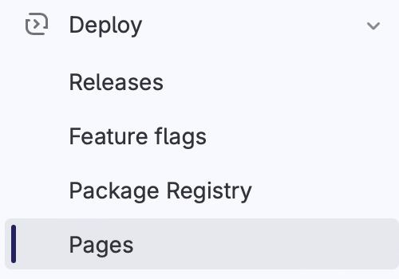

The hosting service#
What is a hosting service#
If you followed the steps described in the previous pages of this tutorial, you should have been able to generate HTML pages starting from reST documents, using Sphinx.
Those HTML pages though are stored locally in your computer memory; you may want them to be publicly available on the web. That’s when hosting services come into play.
A hosting service is what allows you to host your documentation on a server and let it be accessible publicly.
In this tutorial you will learn how to deploy your documentation in three different platforms: GitHub, GitLab and Read the Docs.
Exercise 1: Host your pages on GitHub#
Step 1: create a
documentation.ymlfile.
Add the path .github/workflows to your project and create a file named documentation.yml inside, with the following content:
1name: documentation
2
3on: [push, pull_request, workflow_dispatch]
4
5permissions:
6 contents: write
7
8jobs:
9 docs:
10 runs-on: ubuntu-latest
11 steps:
12 - uses: actions/checkout@v3
13 - uses: actions/setup-python@v3
14 - name: Install dependencies
15 run: |
16 pip install sphinx sphinx_rtd_theme myst_parser
17 - name: Sphinx build
18 run: |
19 sphinx-build source build
20 - name: Deploy to GitHub Pages
21 uses: peaceiris/actions-gh-pages@v3
22 if: ${{ github.event_name == 'push' && github.ref == 'refs/heads/main' }}
23 with:
24 publish_branch: gh-pages
25 github_token: ${{ secrets.GITHUB_TOKEN }}
26 publish_dir: build/
27 force_orphan: true
The important line is the one that contains the sphinx-build instruction. The syntax of this instruction is
sphinx-build <sourcedir> <outputdir>
and in our example the source directory is called source while the output directory is called build. The names of the source and output directory may be different, so make sure that the file contains the correct references to these directories.
Step 2: configure GitHub Pages.
Once you add this file to your project repository and push it on GitHub, a new branch called gh-pages will be created.
On GitHub, you then have to go to Settings > Pages, select “deploy from a branch” under the section “Build and deployment”, select the branch gh-pages and save changes.
Go to “Settings” on the upper toolbar#
{kind=link}
Go to “Pages” on the left sidebar#
Select “deploy from a branch” and “gh-pages”#
The deployment of the documentation will start automatically and you can acces your website by navigating to Actions > Deployments.
Step 3: push changes to your GitHub repository.
GitHub Pages will deploy your documentation every time you push changes on your repository.
Exercise 2: Host your pages on GitLab#
Note
We will suppose that you have a repository with the same content as your GitHub repository in GitLab.
Step 1: create a
.gitlab-ci.ymlfile.
Create a .gitlab-ci.yml file with the following content:
1image: python:3.7-alpine
2
3test:
4 stage: test
5 script:
6 - pip install -U sphinx
7 - sphinx-build -b html source public
8 rules:
9 - if: $CI_COMMIT_REF_NAME != $CI_DEFAULT_BRANCH
10
11pages:
12 stage: deploy
13 script:
14 - pip install -U sphinx
15 - sphinx-build -b html source public
16 artifacts:
17 paths:
18 - public
19 rules:
20 - if: $CI_COMMIT_REF_NAME == $CI_DEFAULT_BRANCH
As in the GitHub example above, the important line is the one that contains the sphinx-build instruction. Make sure that the directory where you keep all your plain-text files is called source or change the path accordingly. Notice that now the output directory is called public instead of build, but that doesn’t matter: this directory will not be part of your repository anyway; it’s a directory created and used internally by GitLab to deploy the website and you don’t need to have access to it.
The deployment of the website will start automatically once you add and push this file to your repository.
Step 2 Visit your website.
You can visit your website navigating to Deploy > Pages from the left sidebar.
{kind=link}
Exercise 3: Host your pages on Read the Docs#
Step 1: sign up on Read the Docs with GitHub.
Sign up on Read the Docs with your GitHub account. Read the docs will now have acces to your repositories on GitHub.
Step 2: add a configuration file.
Add a .readthedocs.yaml file in your project’s repository with the following content:
1# .readthedocs.yaml
2# Read the Docs configuration file
3# See https://docs.readthedocs.io/en/stable/config-file/v2.html for details
4
5# Required
6version: 2
7
8# Set the OS, Python version and other tools you might need
9build:
10 os: ubuntu-22.04
11 tools:
12 python: "3.12"
13 # You can also specify other tool versions:
14 # nodejs: "19"
15 # rust: "1.64"
16 # golang: "1.19"
17
18# Build documentation in the "docs/" directory with Sphinx
19sphinx:
20 configuration: source/conf.py
21
22# Optionally build your docs in additional formats such as PDF and ePub
23# formats:
24# - pdf
25# - epub
26
27# Optional but recommended, declare the Python requirements required
28# to build your documentation
29# See https://docs.readthedocs.io/en/stable/guides/reproducible-builds.html
30# python:
31# install:
32# - requirements: docs/requirements.txt
Notice that Read the Docs wants to know the path to the conf.py document: make sure the path to this file is correct.
Step 3: push changes to your GitHub repository.
Read the Docs will deploy your documentation every time you push changes on your GitHub repository.